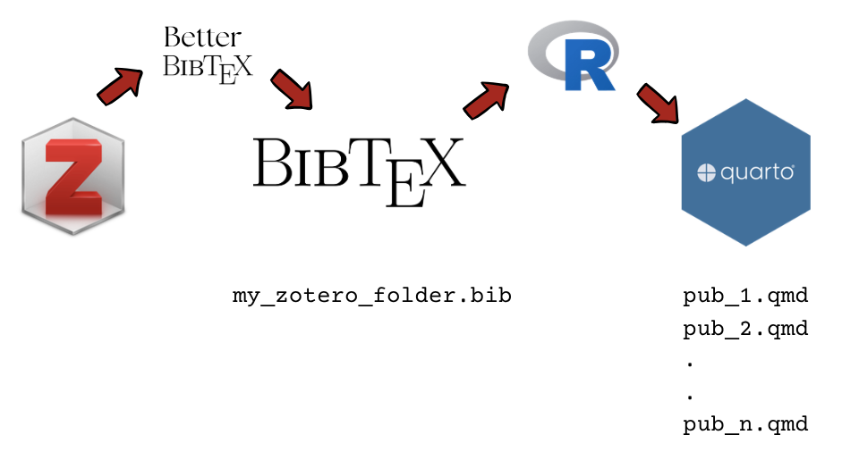

This post is intended to be a practical guide for automatically extracting information from Zotero and generating publication records in a Quarto academic website. The workflow is based on the one proposed by Busetto for Hugo Academic. Previously, I adapted this to Blogdown Hugo-Academic and this version is functional for Quarto websites.
Motivation
Academic publications are one of the most important outputs of our work as scientists. As their visibility is key, there are several platforms where we can share them, such as ResearchGate, Google Scholar, etc. However, these platforms are not under our control and they have their own rules and algorithms that might not be the best for us. For instance, they might not allow to share preprints or other types of outputs that are not peer-reviewed papers, which are also important for our work. Moreover, they might not allow to customize the way we present our publications, which is something that we can do in our personal websites.
In this context, having a personal website where we can share our publications in a way that we control is a great option. However, maintaining this website updated with our latest publications can be a hassle, especially if we have many publications and we want to keep it updated with the latest information. This is where the workflow that I propose in this post comes in handy, as it allows to automatically extract information from Zotero and generate publication records in a Quarto academic website.
You can have a look at the result of the workflow in action in this quarto website, where I have a section for publications that is automatically updated with the information stored in Zotero.
The workflow:

The pieces:
- A Zotero collection where you save your academic publications; let’s call it
publicationsfolder - A synced bibtex file from Zotero, whih runs autonmatically thorough the add-on BetterBibTex
- An R script that extracts information from the bibtex file and generates markdown files for each publication in the academic website; let’s call it
bibtex2quarto.R
1. Zotero collection
Zotero allows to organize your references in folders, which then can be exported independently to other formats. I recommend this folder structure in Zotero:
├── references
│ ├── publications
│ ├── presentations
│ └── thesisAlthough this post is focused on publications, the same workflow can be applied to presentations and thesis, as long as you have a folder for each of them in Zotero and you export a synced bibtex file for each of them (details in the next step). In this way, you can have different sections in your website for each type of academic production, and they will be automatically updated with the information stored in Zotero.
2. Preparing your Website
Folders & files
In your Quarto website, you can have a section for publications, presentations and thesis, which will be automatically updated with the information stored in Zotero. You need to add a references folder to the root with the following structure:
└── references
├── bibtex2quarto.R
├── presentations
│ ├── index.qmd
│ ├── posts
│ └── presentations.bib
├── publications
│ ├── index.qmd
│ ├── posts
│ └── publications.bib
└── thesis
├── index.qmd
├── posts
└── thesis.bibYou can download the folder from here: references folder and paste it in the root of your website project. This folder contains all the information and files needed for the workflow, including the R script bibtex2quarto.R and the index.qmd files for each section. You just need to customize the index.qmd files with the title and other information that you want to show in your website.
2. Export a synced bibtex file from your Zotero folder
A bibtex file is needed as an input for generating publication records. In order to keep this file synced with your Zotero collection you can use the Zotero add-on BetterBibTex. Once installed, a bit of customization in Tools > Preferences > BetterBibTex tab
- in Export tab
- Bibtex tab uncheck “Export unicode …”, otherwhise there are problems with special characters
- Add URLs to Bibtex export: select in the URL field
- in Miscellaneous tab (within Export, not the other one)
- uncheck “Apply case-protection to capitalized words by enclosing them in braces”
Before export the collection, generate the following folder structure in your website project (that mirrors the one in Zotero):
├── references
│ ├── presentations
│ │ └── posts
│ ├── publications
│ │ └── posts
│ └── thesis
│ └── postsNow we are ready to export the collection:
- right click over your Zotero folder publications
- export collection
- format: Better BibTex
- IMPORTANT: select “Keep updated”. In this way, they are synced automatically
- ok, and save it in a folder named publications, preferably in the root of your proyect, with the name
academic-publications.bib(this is the name that the R script will look for, so it is important to keep it).
These steps create an academic-publications.bib file in your website folder. Any reference that you add afterwards, as well as any modification to any of your record, it will updated with the bibtex file available for your website.
Finally, this assumes that you have a relatively ordered and completed set of references. Please check, in my case sometimes authors’ names appear written differently in different references, which for a bibtex file means two different authors. I also recommend to add an abstract to each reference, as it is the body of the publication record in your website. There is no need to do this at the beginning as further updates on Zotero will be reflected in your website after the following step.
So far I have tried this with the following entries: journal, books, chapters and reports, and they are rendered pretty well.
Also: check whether every reference has a bibtex key (!), otherwise the script will not work. You can use the “automatic key” option in BetterBibTex preferences: - go to your collection - select all the references (Ctrl+a) - right button > Better Bibtex > Regenerate Bibtex key
3. bibtex_2academic R script
This R script consists of an R function based on the one by Busetto which basically extracts information from each Bibtex record stored in a .bib file and generates a quarto (qmd) file for each record in the folder.
The first part of the script creates the function bibtex_2academic and the second runs the script specifying a) the bib file, and b) the folder where the publication records (as markdown files) are saved. The script uses the pacman package to install/load libraries, so if it is not installed the script does it and it might take a while just the first time.
The default project structure proposed for this is:
|-- publication
publication.qmd
|--posts
bibtex_2academic_plus.R
academic-publications.bibThe content of the publication.qmd file is the following:
---
title: "Publicaciones y Presentaciones"
page-layout: full
listing:
contents: posts/*.qmd
sort: "date desc"
type: default
categories: true
fields: [title, date, author, categories]
filter-ui: [categories, date]
page-size: 1000
title-block-banner: true
---The default way to do this is:
- save the bibtex_2academic_plus.R file in the publication folder
- save your bib file in the same folder with the name
academic-publications.bib(details in previous step) - run the script from R. Assuming that your working directory is the root folder of the website project, run:
source("content/publication/bibtex_2academic.R")
After running the script, the publication folder should have as many markdown files as the number of references in your Zotero synced folder (and in your generated bib file). After rendering the site with blogdown (blogdown::serve_site() from terminal) you should be able to see the list of publications rendered in the default widget “Recent publications” and in [your website address]/publications/
About the overwriting option
There are two approaches for this citations-academic workflow: 1) to generate the markdown files and then to add additional details and customization there to each markdown file, or 2) make all the modifications within Zotero and do not touch the markdown files generated by this script. Although the first approach allows to add some more fancy stuff manually, I prefer to use the second one and only add information and modifications within Zotero. But, if you go for the first one you should change the “overwrite” option at the end of the script to false, otherwise any change you make locally in the bib file will be lost when running the script again.
Update 1: add conferences and presentations
I wasn’t sure whether to make a different tab for each type of academic production (papers, presentations, conferences), but at the end I decided to make just one big archive of “academic production” as they can be easily sorted within the same page with the drop-down button. It was more complicated than I thought, as some Zotero types where not well recognized by the script and by Wowchemy. So, this is what I did:
- Conference presentations are registered in Zotero as “conference papers”, other talks as “presentations”
- Conferences papers works fine, but presentations are a Zotero type which is not recognized in bibtex records. I changed the script and passed the “Misc” (miscellaneous category) to “Presentations”. Still, this is not recognized by Wowchemy so I followed the instructions to change options in the language pack:
- create a i18n folder in the root
- save here the english language file en.yaml from here
- in
id: pub_uncatchange translation from “Uncategorized” to “Presentation” - the details of the presentation (as place, etc) should be added to the “type” field in Zotero